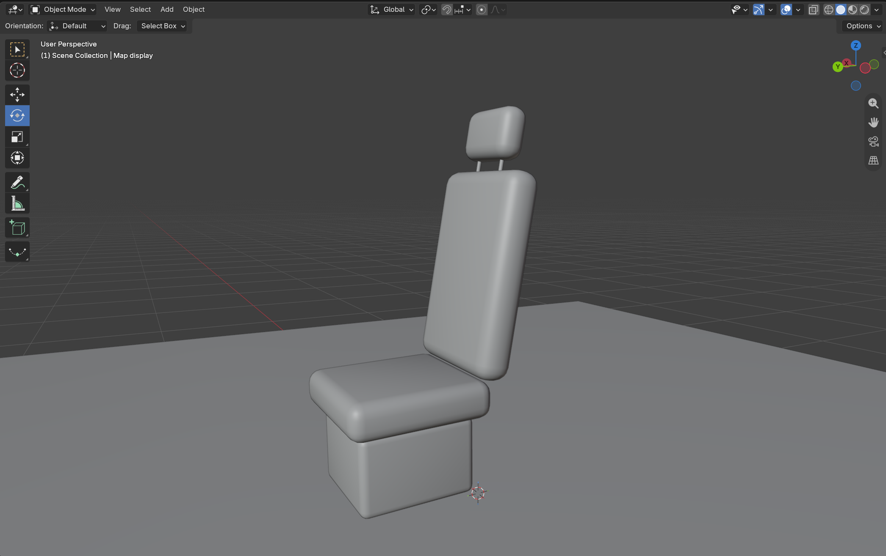
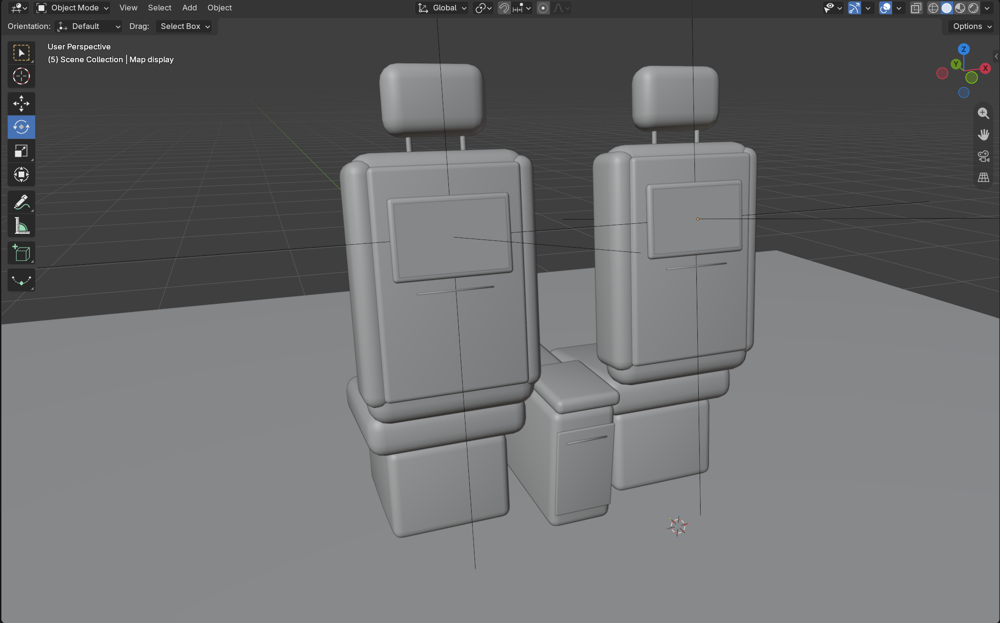
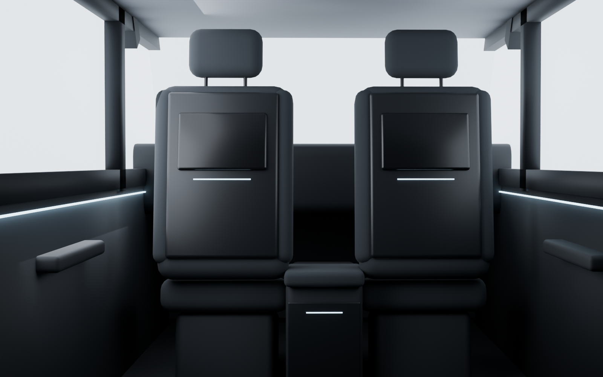
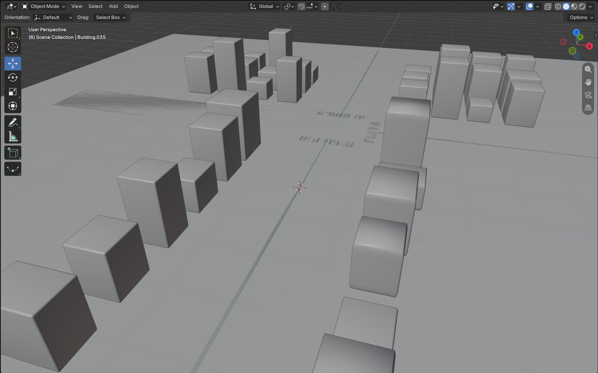
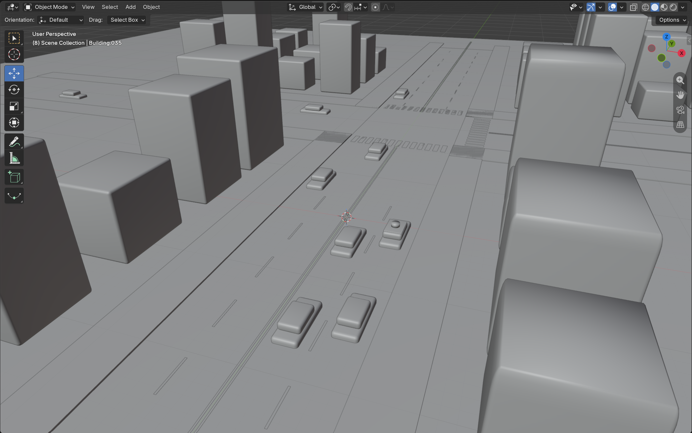
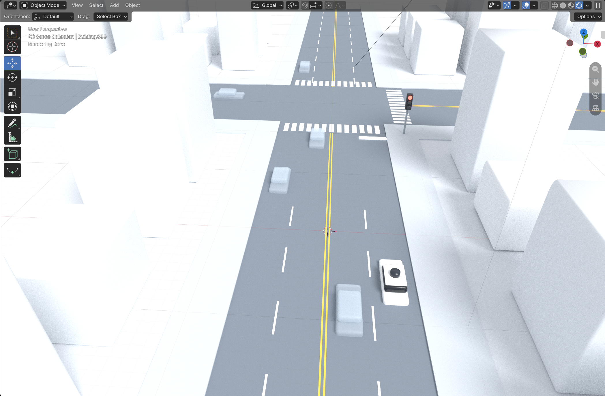
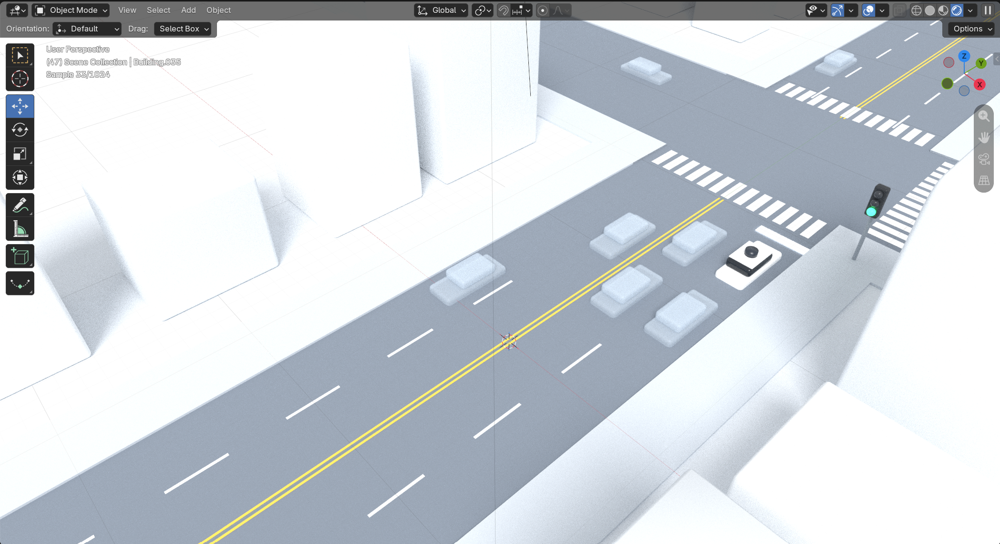
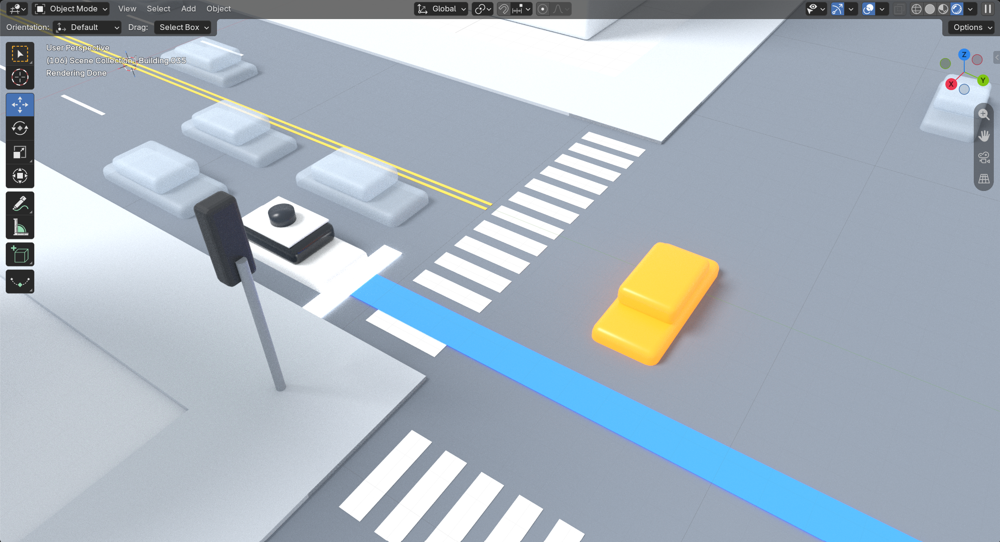
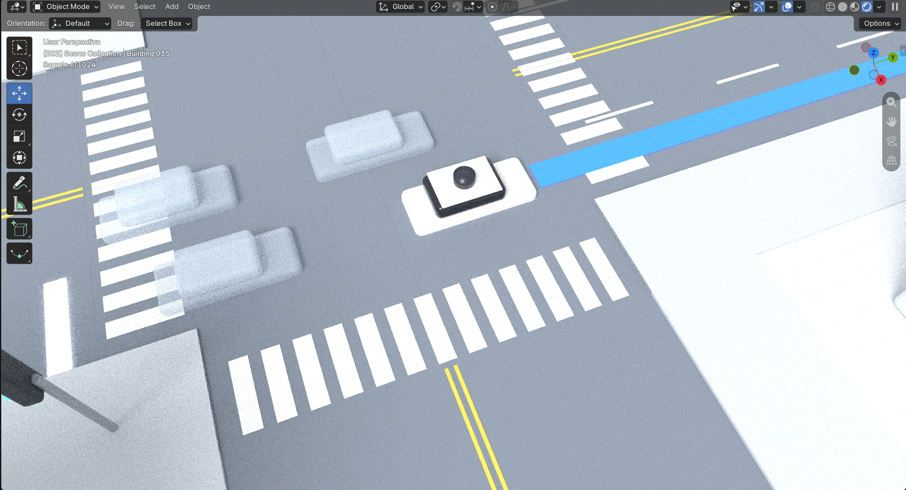
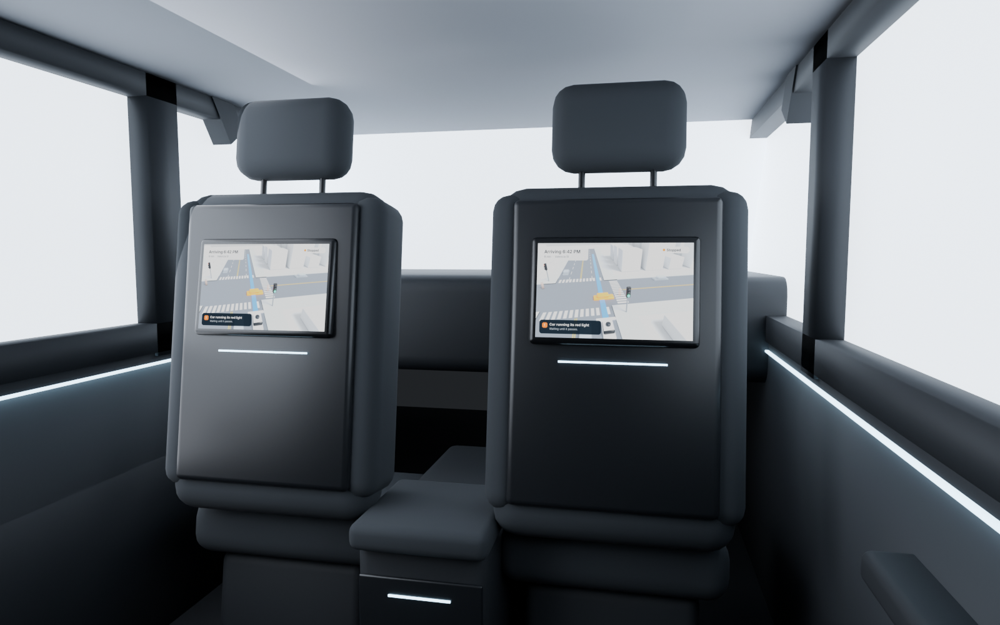

Waymo seatback screen
Part of my Waymo Connect project. I'm designing the screen on the back of the front seat in a Waymo, the one the passenger looks at during the ride. The goal is to help riders trust the car by showing what it sees and what it will do next.
What I'm making
Instead of modeling a full car interior, I focused only on what the passenger sees from the back seat: the two front seats, the screens on their backs, and just enough of the cabin around them so it reads as a car.
The screen will show a 3D map of the street around the car, with the other cars, pedestrians and the route. That map is the interface I'm designing.
Part 1: The cabin
Step 1: Blocking out one seat
I started with a single seat made from cubes: a base, a cushion, the seatback and a headrest on two thin posts. I added a Bevel modifier and Shade Smooth to round off the edges, then tilted the seatback back so it sits like a real car seat.

Step 2: Seatback shell and screen
I added side bolsters and a hard shell on the back of the seat, which is where the screen mounts. The screen is a thin beveled frame with a flat plane inside it for the display. I parented the screen to the seat so it leans with the seatback.

Step 3: Second seat and center console
I duplicated the seat, with the screen coming along, and moved it over for the driver side. Between them I added a center console with an armrest on top.

Step 4: Building the cabin around the seats
I added just enough of the car to give the screens context: the floor, roof, door panels with armrests, window frames, pillars and the dashboard. I made the parts overlap slightly so there are no small gaps or seams where they meet.

Step 5: Setting up the camera
I placed the camera where a passenger's eyes would be, behind the right seat, looking at the screen. Every render is from the rider's point of view.

Step 6: First render
Here's how it's looking so far. The screens are blank for now. Next I'll build the 3D map that goes on them.

Part 2: The 3D map
The 3D map is what plays on the seatback screen. It shows the rider what the car sees and what it will do next.
The scenario: waiting on a green light
I animated one scenario. The Waymo's light turns green, but it stays stopped because a car on the cross street is about to run its red. In that moment a rider would wonder why the car isn't going, so the map shows exactly what the car sees and why it's waiting.
Step 1: Laying out the city
I started with a ground plane and simple boxes for buildings, lined up along two streets that cross. The buildings have different heights so it reads as a city, but no detail, so they don't compete with the street.

Step 2: Roads, crosswalks and cars
I added the roads as flat strips, then lane lines, crosswalks and sidewalks. The cars are two stacked rounded boxes. The Waymo uses the same shape with a sensor dome on the roof so it's easy to spot.

Step 3: Colors
I kept the colors close to a map: white buildings, gray roads, white and yellow markings, and a soft see-through gray for the other cars. The Waymo is the only solid white car, and the blue line is its route.

Step 4: Traffic lights and the stop
I added a traffic light for each direction: green for the Waymo, red for the cross street. Then I keyframed the Waymo driving up and stopping at the line even though its light is green. The cars in its lane stop with it.

Step 5: The car running its red
A car on the cross street speeds through its red light. I keyframed its color so it turns orange while it's a risk, which shows the rider exactly why the Waymo is waiting, then fades back to gray once it's gone.

Step 6: All clear
Once the intersection is clear, the Waymo pulls through along the blue route line, and the waiting traffic goes with it.

The animation
The final animation with the screen messages on top: "Car running its red light" while it waits, then "All clear" when it goes.
Adding the map to the seatback screen
I rendered a frame of the map, added the screen interface on top (arrival time, route status and a message explaining why the car is waiting), and used it as an image texture on the display in my cabin model. This is how it looks from the back seat.
